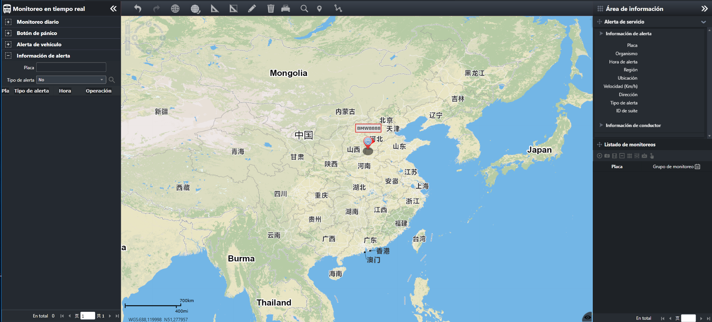

Cuando el dispositivo tiene condiciones anormales, como la falla del receptor GPS y la falla de video, el dispositivo envía
una alarma al sistema. El sistema puede proporcionar consultas de información de alarma, vista de información de alarma, vista
de posición de alarma, vista de video en tiempo real, vista de video histórico y vista, fotografía, seguimiento, etc. De trayectoria
historial para vehículos de alarma.
En la barra de menú de navegación izquierda, seleccione el menú principal para entrar a la interfaz principal de alerta de dispositivo.

Fig 48 Interfaz principal de alerta de dispositivo